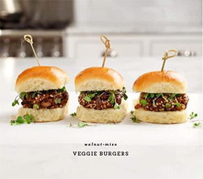

Asian Veggie Burger

Description
Of course we think this veggie burger is the best we’ve ever had… but since tastes are subjective, I’m hoping you at least find this to be “a pretty darn good one.”
While I love both chickpea and black bean patties, I didn’t go that route because I don’t love them between bread… they can get a little dense and starchy for my taste.
However, this walnut-mushroom patty – perfect between bread. Chopped up mushrooms create a sort of meaty quality without becoming dry. The walnut-miso paste creates a really rich flavor, and also helps bind the burger together.
Since this is an asian take on a veggie burger, I stirred some sriracha into my ketchup… and not pictured (but delicious with these) are some sliced avocados and a little bit of Japanese Kewpie mayo.
Ingredients
- ¼ cup walnuts, toasted and chopped
- 1 teaspoon miso paste
- Extra-virgin olive oil, for drizzling
- 2 shallots, chopped
- 6 ounces mushrooms (mix of cremini & shiitake), chopped small
- Splash of tamari sauce
- ½ teaspoon garlic powder
- ½ teaspoon onion powder
- ½ teaspoon Chinese five-spice powder
- Splash of mirin (or rice vinegar)
- ¼ teaspoon honey
- 1 large egg, lightly beaten
- ½ cup panko bread crumbs, divided
- 2 to 3 teaspoons sesame seeds
- 6 soft mini slider buns
Topping Options
- Chopped scallions
- Sprouts
- Siced avocado
- Mayo
- Sriracha and/or ketchup
Instructions
- Crush the walnuts and miso together to form a chunky paste. Use a mortar & pestle if you have one.
- In a medium pan, heat a drizzle of olive oil over medium heat. Add the shallots and let them cook down for about one minute. Add the mushrooms, tamari, garlic powder, onion powder and five-spice powder and stir. Cook until the mushrooms are cooked down, 5 to 8 minutes. Add a splash of mirin to deglaze the pan, then add in the walnut/miso paste mixture and drizzle with the honey. Stir everything together then remove from the heat and transfer to a medium bowl. Set it aside to cool for several minutes before adding the egg.
- Stir in the egg and ¼ cup of the panko, and let the mixture chill in the fridge for 15 minutes.
- Meanwhile, combine the remaining ¼ cup of panko and the sesame seeds on a shallow plate.
- Remove the mixture from fridge and form into 6 small 3-inch patties. Lay each patty in the breadcrumbs, then spoon more over the tops to cover. Use your hands to firmly press them into shape. It’s ok if they fall apart a little, but if they're falling apart too much, let the patties firm up in the fridge for another 10 minutes before you cook them.
- Wipe out the pan you were using before and drizzle in a few tablespoons of olive oil over medium heat. Cook the patties for 2 to 3 minutes per side. Serve on buns with desired toppings.